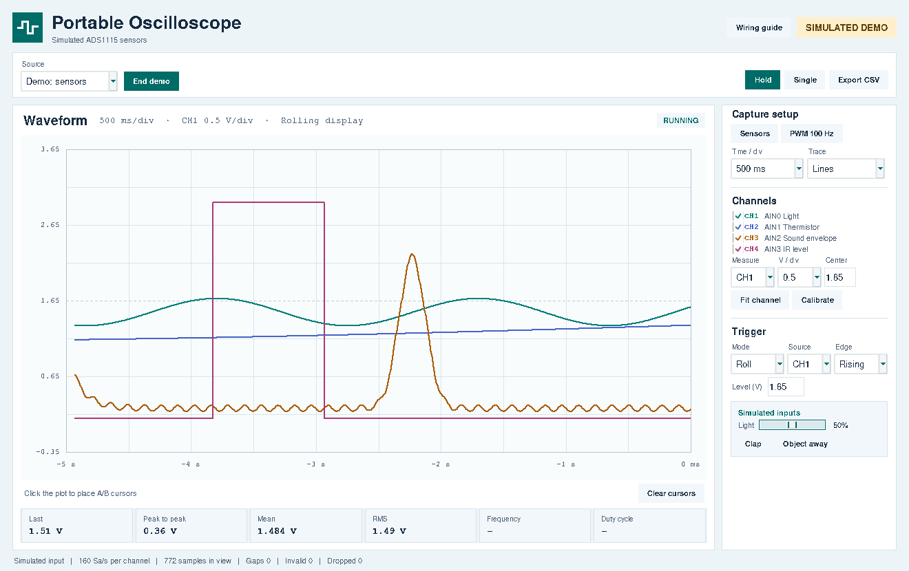

Get started on Windows
- Extract the complete ZIP. Install Python 3.10 or newer with Tcl/Tk enabled. Open
Start_Demo.bat to check the interface before connecting hardware.
- In Arduino IDE, install the Espressif ESP32 board package if needed. Select your classic ESP32 DevKit/WROOM-32 board and its COM port. Open the chosen sketch from
firmware/ and upload it. For an original ESP32 Dev Module-compatible board, choose ESP32 Dev Module.
- For real data, close Arduino Serial Monitor and Plotter. Launch
Start_DSO.bat. The first launch creates .venv and installs pyserial. Choose USB serial, click Scan if your COM port is missing, set 921600, and click Connect.
- Acquisition starts after the device sends identification. The app selects the matching plot preset. Check that the header reads Live hardware.
For offline practice, use Demo: sensors or Demo: PWM. Demo inputs and exported records are labeled simulated. Sensor demo controls include a Light slider, Clap button and Object toggle. The PWM demo has a Duty slider.
Desktop preview
The screenshot shows the app with its built-in sensor demo selected.

Experiment 1 · ADS1115 sensors
Use firmware/ESP32_ADS1115_Sensors/ESP32_ADS1115_Sensors.ino. Parts: classic ESP32 DevKit, ADS1115 breakout, breadboard, USB data cable, LDR, 10 kΩ fixed resistors, and any of the optional sensors below.
| ADS1115 breakout pin | Connect to | Notes |
|---|
| VDD / VCC | Regulated 3.3 V rail | Use the ESP32 3V3 pin or a separate regulated 3.3 V supply if it is inaccessible. When using an external rail, join the grounds and leave the two supply outputs separate. |
| GND | ESP32 GND and sensor GND | Use one common signal ground. |
| SDA | ESP32 GPIO21 | I²C data. |
| SCL | ESP32 GPIO22 | I²C clock. |
| ADDR | Common GND | Selects I²C address 0x48. |
| ALERT / RDY | Leave open | The sketch polls conversion status over I²C. |
| AIN0 / A0 | LDR divider junction | CH1. LDR between 3.3 V and AIN0. Separate 10 kΩ resistor between AIN0 and GND. Voltage rises in brighter light. An available 1 kΩ fixed resistor also works for a quick test, with a smaller reading at the same light level. |
| AIN1 / A1 | 10 kΩ NTC divider junction | CH2. NTC between 3.3 V and AIN1. Separate 10 kΩ resistor between AIN1 and GND. Voltage rises as the thermistor warms. |
| AIN2 / A2 | Sound module envelope output | CH3. Use a 3.3 V-compatible module with an analog envelope output. Power VCC from the 3.3 V rail and join GND. Verify the labeled output provides an envelope in the 0–3.3 V range. |
| AIN3 / A3 | IR obstacle module digital OUT / DO | CH4. Use a 3.3 V-compatible module. VCC to the 3.3 V rail, GND to common GND. Depending on the module, detection can be active low. |
Choose Sensors for 500 ms/div, 0.5 V/div and Roll. Cover and uncover the LDR to see CH1 change. Warm the thermistor with your fingers for a slower transition on CH2. The display is in volts. The ADS1115 reads its channels sequentially and shares its conversion rate across them, so the readings are suited to slow signals and sensor envelopes.
Experiment 2 · LED PWM and Tektronix
Use firmware/ESP32_PWM_GPIO34/ESP32_PWM_GPIO34.ino or your original compatible PWM sketch. Parts: 10 kΩ potentiometer, an indicator LED, its own 330 Ω or 1 kΩ series resistor, and two equal 1 kΩ divider resistors.
| From | To | Purpose |
|---|
| GPIO26 | One outer leg of the 10 kΩ potentiometer | The PWM sketch drives this GPIO HIGH to supply the low-current pot. Use the board 3.3 V rail if accessible and leave GPIO26 disconnected from that leg. |
| GPIO35 | Potentiometer center / wiper | Reads the knob position. |
| ESP32 GND | Other outer leg of the pot and LED cathode | Common ground. Swap the pot’s outer connections to reverse knob direction. |
| GPIO25 | Series resistor, then LED anode | Drives the LED at 100 Hz. The LED series resistor is separate from the ADC divider. |
| GPIO25 | 1 kΩ R1, then GPIO34 junction | First half of the ADC divider. Same PWM node as the LED branch. |
| GPIO34 junction | 1 kΩ R2, then GND | Second half of the divider. GPIO34 sees roughly 0–1.65 V. The sketch applies ×2 to report GPIO25 voltage. |
| Tektronix CH1 tip | GPIO25 | Optional direct comparison with the physical scope. Match the probe attenuation switch in the Tektronix channel menu. |
| Tektronix ground clip | ESP32 GND | Attach the ground clip to the low-voltage circuit ground. |
| ESP32 USB | Computer | USB serial to the Python DSO. |
Choose PWM 100 Hz for 5 ms/div, 2 V/div and a 1.65 V rising trigger. Turn the pot slowly to show the LED brightness and HIGH pulse width changing together. The nominal period is 10 ms. At the knob extremes a flat trace is normal. At the nominal 2 kSa/s target, narrow pulses can fall between samples.
Scope controls
- Run / Hold updates or freezes the display. Single captures once. Roll mode waits for a full new time window when data was already flowing.
- Roll follows current samples, Auto uses an edge when present and can display a flat signal, and Normal waits for the selected edge.
- Toggle each plotted channel in Channels. Use Measure to choose which channel sets the voltage axis and readouts. Choose V/div and Center separately per channel, or use Fit channel.
- Click two positions on the plot for A/B timing cursors and the time difference. Right-click or use Clear cursors to reset.
- Calibrate uses two raw readings and their verified reference voltages. Reset ×1 sets gain to one and offset to zero. Calibration is per connection. The PWM sketch already compensates for the 1 kΩ divider.
- Export CSV writes the displayed acquisition window with channel values and a source label. Display lines and PWM steps leave the sampled values intact.
Troubleshooting
| Symptom | What to check |
|---|
| COM port is missing or busy | Check for a data-capable USB cable and the board’s USB serial driver. Close Arduino Serial Monitor and any older DSO window, then rescan. |
| Waiting for device | Match the baud to the flashed sketch. Both included sketches use 921600. Earlier 1 Hz sketches can use 115200. For ADS1115, check the supply, ADDR and SDA/SCL. The sketch identifies itself after the first successful conversion. |
| Sensor trace is flat | Enable the correct channel, select Roll, and check the voltage at its ADS1115 input. For a wiring check, disconnect the sensor output from that input, and test against GND and then the same 3.3 V rail. |
| PWM appears flat | Place the knob near the middle, apply the PWM preset, and check the GPIO34 divider junction. Verify GPIO25 on the Tektronix if available. |
| Increasing gaps or invalid packets | Try a short USB cable, verify the baud and close other serial applications. For an ADS1115, check I²C pull-ups and shorten I²C leads. |
References: TI ADS1115 datasheet · Espressif ESP32 I²C · Espressif ESP32 LEDC.